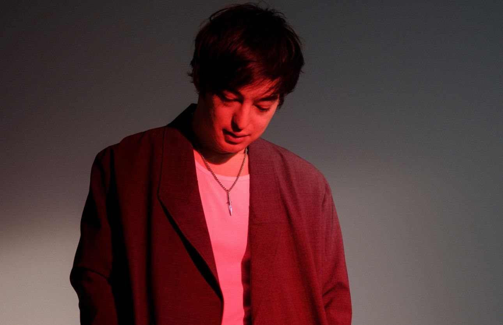

Conoce a Joji
Biografía
Joji (cuyo nombre real es George Kusunoki Miller) es un cantante, productor y compositor de música r&b que comenzó su carrera musical formalmente en 2017 y que desde entonces se ha hecho con el cariño y apoyo de un gran número de personas. A pesar de haber nacido en Osaka, Japón y hablar japonés, su repertorio de canciones y proyectos discográficos son todos en inglés. Actualmente vive en Manhattan, Nueva York, Estados Unidos.Antes de dedicarse a la música y ser conocido como «Joji», era conocido por «The Filthy Frank Show» (español: El show de Filthy Frank) y también por su personaje «Pink Guy» para dicho show de comedia que se subía en Youtube. Lo curioso es que llegó a sacar una gran cantidad de canciones bajo el pseudónimo de «Pink Guy»; sin embargo, estas no eran para nada serias. Otra cosa que se le atribuye a George es el haber creado la tendencia del «Harlem Shake», un fenómeno viral de 2013. Fue el primero en subir un vídeo de la canción titulado «DO THE HARLEM SHAKE (ORIGINAL)» que rápidamente llamó la atención de muchos usuarios que decidieron hacer sus propias versiones del vídeo.
Trayectoria Musical
A pesar de que fue en 2017 que Miller decidió hacer música permanentemente bajo el alias de «Joji», lo cierto es que lleva mucho más tiempo en internet y haciendo de las suyas, pues su primer contacto con Youtube fue en 2006, apenas un año después de que la plataforma fue creada. Cuando todavía continuaba con «The Filthy Frank Show», bajo el pseudónimo de Pink Guy (personaje con el que él aparecía en dicho show) lanzó varias canciones, pero la seriedad brillaba por su ausencia en ellas.
Sus primeras canciones lanzadas con el nombre de Joji fueron «Thom» y «You Suck Charlie» ambas lanzadas a finales de 2015. Estas fueron publicadas bajo un falso alias, pero sus seguidores no tardaron en darse cuenta que estas canciones eran de Miller. Finalmente en 2017 lanzó «I don’t wanna waste my time«, «Rain on me» y «Will He», mismo año en el que lanzó su primer EP bajo el alias de Joji titulado «In Tongues» que alcanzó el puesto 58 en el Billboard 200. En 2018 lanzó su álbum debut titulado «BALLADS 1» que incluye 12 canciones entre las que podemos mencionar «Test drive«, «Attention«, «Yeah right» y su canción más escuchada hasta el momento «Slow dancing in the dark». Este álbum alcanzó la posición número uno en la lista de música r&b y hip-hop de Billboard.
El siguiente año lanzó «Lost Ballads» un proyecto que consta de tres canciones que no fueron incluidas en su álbum debut. En 2020 fue publicado su segundo álbum «Nectar» que consta de 18 canciones y que gozó de un buen recibimiento por parte de los fans y buenos puestos en las listas de charts de Billboard. Entre algunas canciones incluidas en este álbum podemos mencionar «Tick Tock«, «Daylight» con Diplo, «Run«, «Gimme love» y «Like you do«.